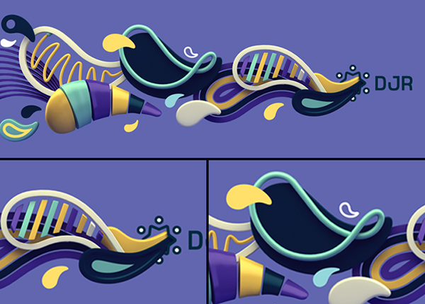
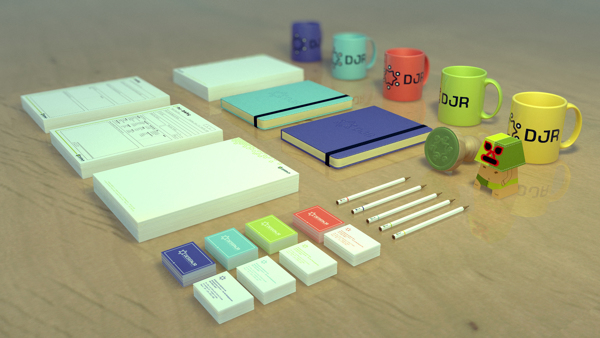

Após doze anos de existência da Design Júnior, sentiu-se a necessidade de refazer a marca da empresa. Apesar de consolidada no mercado e dentro da faculdade, a marca anterior continha alguns problemas de reprodutibilidade: limitação de cores, de arte e de tamanho de reprodução do logo. A nova proposta busca manter o que é o diferencial da marca da empresa - a semente e o “verde júnior” - corrigir os problemas técnicos do logo anterior e possibilitar novas combinações de cores e artes. A partir do momento em que decidimos levar o projeto adiante, contatamos os antigos membros da Júnior para que os mesmos colaborassem com idéias, críticas ao logo e experiências de suas gestões. Foi um processo muito importante, pois o redesign era uma necessidade percebida em várias gestões anteriores e cada uma delas tinha um pensamento sobre o mesmo.
After twelve years of Design Júnior's creation, the need of a remake of the brand appeared. Despite it's strong, the brand had some reproducibility problems: the colors, art and the reproduction size. The new suggestion pursuits to keep the brand's differentiation - the seed and the "junior's green" - correct the techinical problems of the logo and enable new colors and arts combinations. From the moment we decided to take the project ahead, we contacted the old members of the enterprise so they could cooperate with ideas, critical and experience from their managements periods. It was a very important process, because the rebrand was a necessity from a long time ago.
Desde o início, buscou-se manter alguns conceitos atrelados à marca: em primeiro lugar, manter algo que remetesse ao logo anterior, pois o mesmo estava em vigor há muitos anos. Queria-se também que a marca passase o espírito do que é a Júnior: esse cantinho especial, cheio de aprendizado, responsabilidades mas também de curtição e amizade. O logo deveria ser formal o suficiente e ao mesmo tempo despojado e atual. Queríamos algo que não fosse datado, que não perdesse o seu significado com o passar dos anos e então fosse necessário um novo redesign. Resultado: três semanas depois, ainda não havíamos entrado num consenso sobre a marca. Partimos para o processo de braindrawing: processo dinâmico, onde todos desenham ao mesmo tempo, em períodos determinados e em seguida trocam de desenhos entre si para que um possa criar com base na idéia do outro. Conseguiu-se algumas linhas para serem seguidas, mas ainda não era suficiente. As idéias soavam radicais demais, ou conservadoras demais e não conseguiam resolver os problemas técnicos da marca sem perder a mensagem que queríamos passar de início. Decidimos então partir para outra solução: afinal, se os problemas da marca eram principalmente técnicos, porque não somente resolvê-los? A idéia que queríamos passar da Design Júnior era praticamente a mesma de quando a empresa foi criada, porque fazer um mudança tão radical então? E fez-se a luz: a partir de então o processo se tornou mais fluído e então chegamos aonde queríamos.
From the beggining, we seeked to keep some concepts attached to the brand: first of all, keep something that reminds of the old logo, because it eas in force for many years. We also wanted that the brande showed the Junior's spirit: this especial place, full of knowledgment, responsabilities and also full oof friendship and joy. the logo should be formal enough and also stripped and actual. We needed something non dated, that wouldn't lose it's meaning along other ten years. Result: three weeks later, we still hadn't entered into an agreement about the brand. We started, then, the braindrawing process: dinamic mechanism, where everyone draw at the same time, into determined space of time and them interchange drawings each other so one can create based on other ideas. We've got some lines of thought, but it wasn't enough. The ideas sounded too radicals or conservatives and could't solve the techinical problems of the brand without losing the message we wanted to pass from the begining. So we decided to follow another way: after all, if the problems were mainly techinical, why only just solve them? If the idea of Design Junior we wanted to show was virtually the same, why change everything so radically? And them became light: thereafter the process became fluid and them we achieved our target.
O novo logotipo criado é harmônico, remete ao anterior, pois manteve-se a semente e o verde da Design Júnior, e ao mesmo tempo é fresco, jovem. Como exemplo da versatilidade da identidade, criou-se cinco artes diferentes, utilizando apenas as cores da identidade e o logo. Tais artes estariam destinadas a capas de facebook e wallpapers.
The new logo is harmonical, remits to the older one, because of the seed and the green, and also fresh and young. As an example of the identity's versatility, we created five different arts, using only the colors of the identity and the logo. Those arts were destinated to facebook covers and internal wallpapers.

Decidiu-se por refazer a papelaria da empresa, de acordo com a nova identidade. Por serem materiais institucionais, procurou-se manter a seriedade e uniformidade entre todos. Refizemos também outros materiais, como a camisetas, a placa de identificação da sede e criamos materiais personalizados, como canecas e ecobags.
We decided to rebuild the enterprise stationery, according to the new identity. Since they're institutional materials, we wanted to keep the reliability and uniformity. We also redid other materials, like the t-shirts, the slab identification and we created customized materials, like mugs and ecobags.
